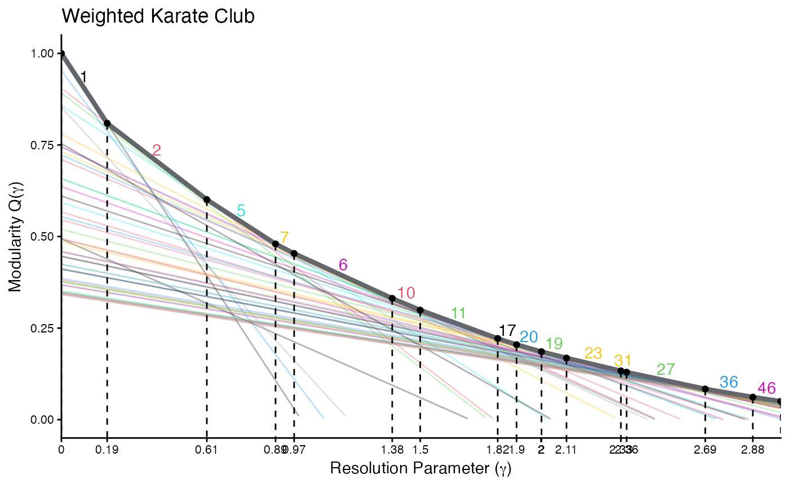
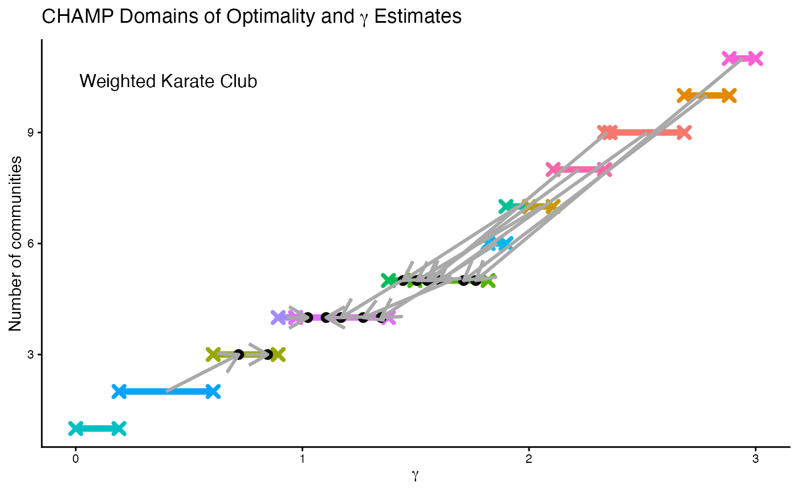

get_CHAMP_map.Rdget_CHAMP_map calculates the iterative map defined by Newman's equivalence between modularity optimization and inference on the degree-corrected planted partition stochastic block model on a CHAMP set of partitions. That is, given an input set of partitions of nodes in a network into communities, calculated by get_partitions or by other means and coerced into that format, CHAMP identifies which input partition is optimal at each value of the resolution parameter, gamma, and then get_CHAMP_map calculates the iterative map of this set onto itself. Importantly, a fixed point of this map, where a partition points to itself, indicates that partition is self-consistent in the sense of this equivalence between modularity and planted partition models. As with CHAMP, the get_CHAMP_map code is deterministic and fast given a specified input set of partitions; that is, all of the computational complexity and pseudo-stochastic heuristic nature of community detection is in identifying a good input set in get_partitions.
The CHAMP method was developed and studied in Weir, William H., Scott Emmons, Ryan Gibson, Dane Taylor, and Peter J. Mucha. “Post-Processing Partitions to Identify Domains of Modularity Optimization.” Algorithms 10, no. 3 (August 19, 2017): 93. doi:10.3390/a10030093
.
The equivalence between modularity optimization and planted partition inference was derived by M. E. J. Newman in “Equivalence between Modularity Optimization and Maximum Likelihood Methods for Community Detection.” Physical Review E 94, no. 5 (November 22, 2016): 052315. doi:10.1103/PhysRevE.94.052315 .
The iterative map on the CHAMP set was developed and studied in Gibson, Ryan A., and Peter J. Mucha. “Finite-State Parameter Space Maps for Pruning Partitions in Modularity-Based Community Detection.” Scientific Reports 12, no. 1 (September 23, 2022): 15928. doi:10.1038/s41598-022-20142-6 .
See also https://github.com/wweir827/CHAMP and https://github.com/ragibson/ModularityPruning.
get_CHAMP_map(
network,
partitions,
plotlabel = NULL,
shiny = FALSE,
plots = TRUE
)The network, as igraph object, to be clustered into communities. Only undirected networks are currently supported. If the object has a 'weight' edge attribute, then that attribute will be used, though it is important to emphasize that the underlying equivalence between modularity and planted partitons defining the iterative map was derived for unweighted networks.
List of unique partitions with CHAMP summary generated by CHAMP.
Optional label to include as annotation on the generated figure.
A logical value indicating whether get_CHAMP_map is being called within ideanetViz. If TRUE, get_CHAMP_map returns an output data frame that ideanetViz uses for visualization.
A logical value indicating whether output plots should be generated.
get_CHAMP_map returns the input list of partitions with the $CHAMPsummary updated to indicate the iterative map, that is, information about the next partition that each partition points to in the map, along with the generated $CHAMPmap plot of the partitions in the CHAMP set (by their numbers of communities) versus gamma. If shiny = TRUE, the returned list also includes a data frame entitled shiny_partitions that is used for visualizations in ideanetViz.
# Use get_partitions, CHAMP, and get_CHAMP_map to generate
# multiple partitions of the Zachary karate club and identify
# the domains of optimality in the resolution parameter for
# different partitions
data(karate, package = "igraphdata")
partitions <- get_partitions(karate, n_runs = 500)
#> This graph was created by an old(er) igraph version.
#> ℹ Call `igraph::upgrade_graph()` on it to use with the current igraph version.
#> For now we convert it on the fly...
#> Warning: NAs introduced by coercion
#>
#> Warning: Non-numeric IDs detected in the igraph object's `name` attribute. The `name` attribute will be updated to contain zero-indexed ID numbers. The original `name` values will be reassigned to the `original_name` attribute.
#> Warning: Calling cluster_edge_betweenness with reciprocal weights, which may affect selected membership vector incorrectly.
#> Warning: Membership vector will be selected based on the highest modularity score.
#> Source: community/edge_betweenness.c:504
#>
#> [1] "48 unique partitions generated between cluster_leiden() and comm_detect()"
partitions <- CHAMP(karate, partitions, plottitle = "Weighted Karate Club")
#> [1] "15 partitions in the CHAMP set (i.e., on the upper envelope of Q v. gamma)"

partitions <- get_CHAMP_map(karate, partitions, plotlabel = "Weighted Karate Club")
#> Warning: The theory underlying get_CHAMP_map() is for unweighted networks. The formulae have been naturally generalized to weighted networks, but these have not been well studied.
#> [1] "Partition # 5 (with 3 communities) is a fixed point of the iterative map"
#> [1] "Partition # 6 (with 4 communities) is a fixed point of the iterative map"
